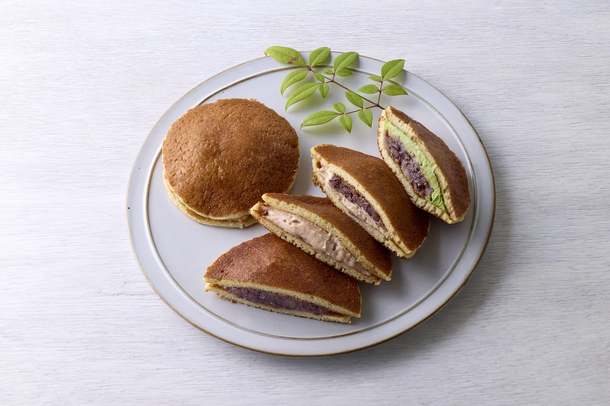

人氣 No.1 招牌必點
人氣 No.1 招牌必點
現烤米粉雞蛋仔鬆餅 ＆ 純豆乳霜淇淋
ワッフル純豆乳ソフト
現點現烤的 100% 新潟米粉雞蛋仔鬆餅（外皮酥脆、內裡 Q 彈麻糬口感），搭配使用福岡豆腐名店鮮榨無添加豆乳製成的濃郁霜淇淋。隨餐免費附上 5 種日式配料盤（抹茶粉、黃豆粉、焙茶粉、純素巧克力醬、黑蜜糖漿）自由添加！點購任一甜點搭配飲品套餐，全飲品均一價 ¥330！
Medium (Half) ¥690 / Large (Full) ¥900 （含稅）
福岡藥院 · 地下鐵七隈線「藥院大通站」2號出口步行 2～3 分鐘
100% 無麩質（Gluten-Free）＆全植物性（純素 Vegan）甜點專門店。全品項不使用小麥、乳製品、雞蛋、蜂蜜、吉利丁與精製白砂糖，提供現點現烤新潟米粉雞蛋仔鬆餅、鮮榨濃郁純豆乳霜淇淋、鬆餅冰淇淋杯、烘焙甜甜圈、米粉銅鑼燒、米粉義式冰淇淋與植物性咖啡飲品。
Menu & Ordering
不會說日文也沒問題！點擊任一餐點的 「出示給店員看 (Show staff)」 按鈕，手機畫面就會顯示清楚的日文點餐卡（可切換內用或外帶）。
人氣 No.1 招牌必點
ワッフル純豆乳ソフト
現點現烤的 100% 新潟米粉雞蛋仔鬆餅（外皮酥脆、內裡 Q 彈麻糬口感），搭配使用福岡豆腐名店鮮榨無添加豆乳製成的濃郁霜淇淋。隨餐免費附上 5 種日式配料盤（抹茶粉、黃豆粉、焙茶粉、純素巧克力醬、黑蜜糖漿）自由添加！點購任一甜點搭配飲品套餐，全飲品均一價 ¥330！
Medium (Half) ¥690 / Large (Full) ¥900 （含稅）

¥660 – ¥690
純素冰淇淋杯 4 種（草莓・巧克力・抹茶・黑芝麻 ¥690）＆ 豆乳鮮奶油杯 2 種（草莓・焦糖堅果 ¥660）。

¥660 – ¥690
現點現烤 100% 新潟米粉鬆餅，外酥內Q：原味（¥660）、可可・抹茶・黑芝麻（各 ¥690）。外帶盒 +¥100。

¥460 – ¥690
鮮榨無添加純豆乳霜淇淋（¥460/¥690，附 5 種免費配料）與有機漂浮冰咖啡（¥660）。

¥330 – ¥430
無堅果 Q 彈豆乳甜甜圈 6 種（¥330）＆ 常溫可保存約 1 週的無大豆・無夏威夷豆糖霜蛋糕甜甜圈 6 種（¥430）。

各 ¥460（4種）
鬆軟米粉與杏仁餅皮夾入北海道紅豆餡與豆乳鮮奶油。半解凍像銅鑼燒冰淇淋般享用超美味！

冰淇淋 ¥490 · 飲品套餐 ¥330
8 種米粉義式冰淇淋（含 4 種無大豆・無堅果水果口味），點甜點加購任一飲品均一價 ¥330！
Dietary & Allergy Policy
不攜入小麥・乳製品・雞蛋之廚房
SoyStories 的所有餐點皆為 100% 植物性（純素 Vegan，不含五葷）且 無麩質（Gluten-Free）。廚房內絕不攜入小麥、乳製品、雞蛋、蜂蜜與吉利丁，並以甜菜糖等天然植物甜味劑取代精製白砂糖（注意：並非無糖／零糖產品）。
點擊想避開的食材進行篩選（9項個別篩選）：
FAQ & Takeout
每日 11:00 ～ 22:00（最後點餐 21:45）全年無休。晚間部分口味甜甜圈可能售罄，歡迎透過 Instagram 私訊（@soystories_yakuin）提前預留。
支援現金（日圓）、各大信用卡（Visa / Mastercard / JCB / Amex / Diners）、日本交通 IC 卡（Suica / PASMO / SUGOCA / ICOCA 等）、iD、QUICPay 與 PayPay。搭乘福岡市地下鐵七隈線至「藥院大通站（薬院大通駅）」2號出口步行 2～3 分鐘即可抵達（從天神南站搭車約 4 分鐘、從博多站約 9 分鐘）。
Access
請向計程車司機出示此畫面
〒810-0022
福岡市中央区薬院2丁目2-24
チサンマンション第3博多 1階
SoyStories 薬院店（地下鉄七隈線「薬院大通駅」2番出口近く）
請向櫃檯店員出示此畫面
これをください